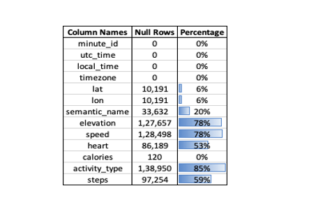
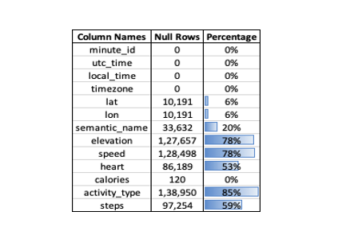

Lifelog Summarization Using LLMs
This project explores the summarization of lifelog data using various techniques, including template-based methods, rule-based natural language generation (NLG), statistical machine learning models, and Large Language Models (LLMs). The goal is to generate coherent, engaging, and personalized narratives from lifelog metadata.
Problem Statement
Lifelogging generates vast amounts of continuous, multi-modal data, making it challenging to create meaningful, accurate, and engaging narratives. Traditional methods like template-based story generation lack flexibility, while statistical models often miss nuanced understanding.
Approach
- Template-Based Generation: Used predefined templates to ensure structured summaries.
- Rule-Based NLG: Developed rules to highlight significant metrics and events.
- Statistical Models: Applied clustering and regression techniques for summarization.
- LLMs: Leveraged GPT-4 to generate coherent and engaging narratives based on metadata.
Results
Among the methods, LLMs outperformed the others, providing the most accurate, coherent, and engaging summaries. The research demonstrated the potential of hybrid approaches for enhanced performance in lifelog summarization.
Visualizations
 
